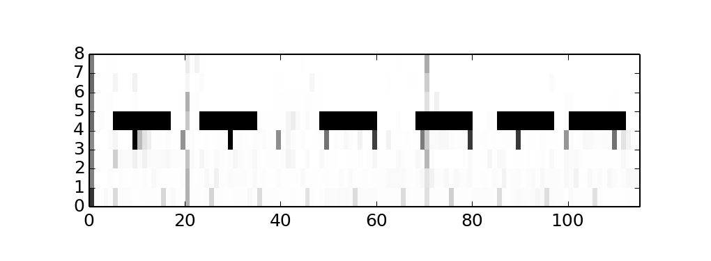
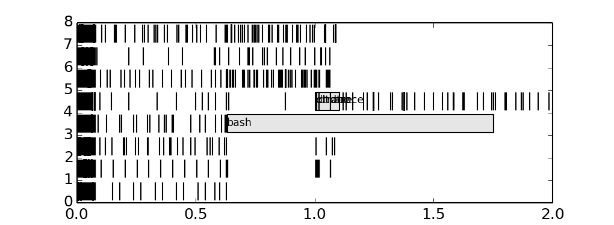

Visualization
Reading trace files is exhausting, so the most popular scenario for the post-processing is visualization. There are multiple standard ways to do that:
-
Use GNU Plot as shown here: System utilization graphing with Gnuplot. Tracing script directly generates commands which are passed to GNU Plot.
-
DTrace Chime plugin for the NetBeans
- SystemTap GUI
-
Writing you own visualization script. For example, following examples were generated using Python library
matplotlib.
Which types diagrams are mostly useful? Let's find out.
Linear diagram
The simplest one is a linear diagram. X axis in that diagram is the time, so it allows to see changes in system's behaviour over time. These diagrams may be combined together (but the time axis should be same on all plots), which allows to reveal correlations between characteristics, as shown on following image:

These three characteristics are names of the probes from vminfo provider in DTrace: zfod stands for zero-filled on-demand which is page allocation, while pgpgin and pgpgout are events related to reading/writing pages to a backing store, such as disk swap partition. In this case, memeat process (which name is self-explanatory -- it allocates all available RAM) allocates plenty of memory, so number of zfod events is high, causing to some pages being read or written to a disk swap.
Tracing a scheduler
Now let's run following loop in a shell which periodically eats lots of CPU than sleeps for 5 seconds:
# while :
do
for I in {0..4000}
do
echo '1' > /dev/null
done
sleep 5
done
And gather scheduler trace: each time it dispatches a new process we will trace process name, cpu and timestamp:
# dtrace -n '
sched:::on-cpu {
printf("%d %d %s\n", timestamp,
cpu, (curthread ==
curthread->t_cpu->cpu_idle_thread)
? "idle"
: execname ); }'
Histograms
In many cases of performance analysis we rely on average values, which are not very representative.
| CEO salary | Senior staff salary | Junior staff salary |
| 100k roubles | 48k roubles | 25k roubles |
| 2 million roubles | 23k roubles | 7k roubles |
If we calculate per-process difference between scheduler timestamps and build a logarithmic histogram plot, we'll see several requests which lasts for seconds:

Y axis is logarithmic and represents a number of observed intervals when CPU was busy for time period shown on X axis. If we normalize this characteristic, we will get probability density function.
quantize()/hist_linear() and lquantize()/hist_log() might do the same, but in text terminal.
Heat maps
When two axes is not enough for your graph, you may also use a colour intensity of each pixel too. Let's see, how CPU usage is distributed across CPUs. To do so we need pick a step for the observation interval, say T=100ms, accumulate all intervals when non-idle thread were on that CPU, say t, than pixel's intensity will be 1.0 - t/T so 1.0 (white) will say that CPU was idle all the time, while 0.0 (black) will be evidence that CPU is very busy. For our example, we will see, that CPU 4 is periodically runs CPU-bound tasks:

Gantt charts
Generally speaking, gantt charts help to understand state of the system across the timeline. For example they are helpful in planning projects: what job needs to be done by whom and when, so the jobs are placed on X axis while Y axis is a timeline, and color is used to distinguish teams responsible for jobs. In our case we may be interested in how load distributed across CPUs, and what's causing it, so we here are a gantt chart:

We added process name to the longest bars, and it seems that bash process causing trouble. We could discover it before, adding tags on histogram.